Using a dedicated datamodule to perform inference: the crop classification example.#
To run this example, the following packages are necessary.#
import os
import sys
import torch
import gdown
import terratorch
import albumentations
import lightning.pytorch as pl
import matplotlib.pyplot as plt
from terratorch.datamodules import MultiTemporalCropClassificationDataModule
import warnings
Downloading a random subset of the required dataset (~1 GB).#
if not os.path.isfile('multi-temporal-crop-classification-subset.tar.gz'):
!gdown 1LL6thkuKA0kVyMI39PxgsrJ1FJJDV7-u
if not os.path.isdir('multi-temporal-crop-classification-subset/'):
!tar -xzvf multi-temporal-crop-classification-subset.tar.gz
dataset_path = "multi-temporal-crop-classification-subset"
Instantiating the corresponding datamodule.#
datamodule = MultiTemporalCropClassificationDataModule(
batch_size=8,
num_workers=2,
data_root=dataset_path,
train_transform=[
terratorch.datasets.transforms.FlattenTemporalIntoChannels(), # Required for temporal data
albumentations.D4(), # Random flips and rotation
albumentations.pytorch.transforms.ToTensorV2(),
terratorch.datasets.transforms.UnflattenTemporalFromChannels(n_timesteps=3),
],
val_transform=None, # Using ToTensor() by default
test_transform=None,
expand_temporal_dimension=True,
use_metadata=False, # The crop dataset has metadata for location and time
reduce_zero_label=True,
)
# Setup train and val datasets
datamodule.setup("predict")
Visualizing a few samples.#
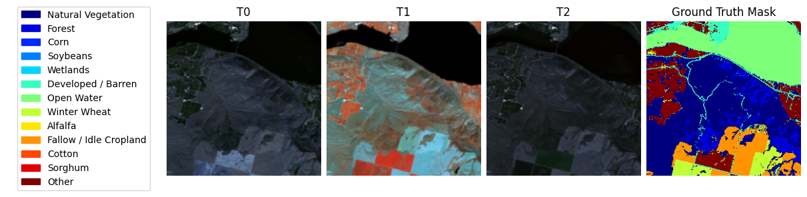
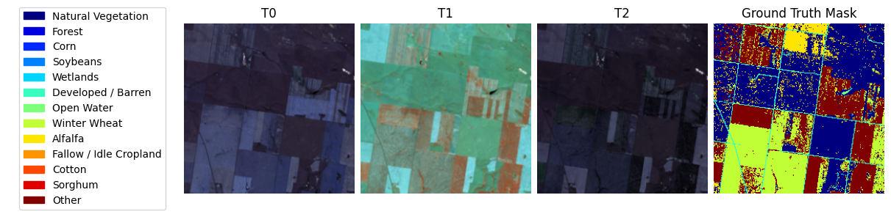
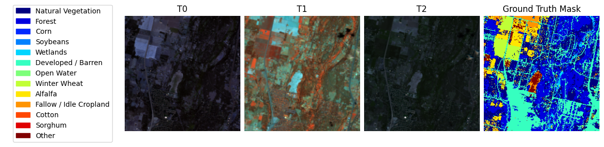
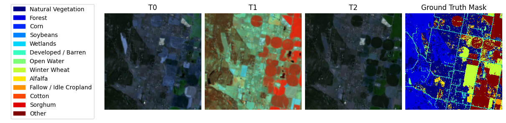
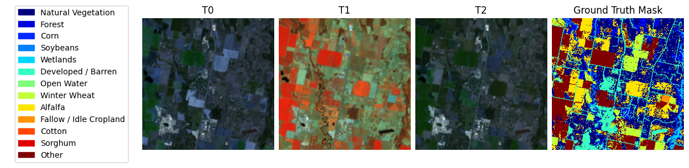
Downloading the best pretrained checkpoint.#
best_ckpt_100_epoch_path = "multicrop_best-epoch=76.ckpt"
if not os.path.isfile(best_ckpt_100_epoch_path):
gdown.download("https://drive.google.com/uc?id=1o1Hzd4yyiKyYdzfotQlEOeGTjsM8cHSw")
Instantiating the Lightning Trainer.#
checkpoint_callback = pl.callbacks.ModelCheckpoint(
dirpath="output/multicrop/checkpoints/",
mode="max",
monitor="val/Multiclass_Jaccard_Index", # Variable to monitor
filename="best-{epoch:02d}",
)
trainer = pl.Trainer(
accelerator="auto",
strategy="auto",
devices=1, # Lightning multi-gpu often fails in notebooks
precision='bf16-mixed', # Speed up training
num_nodes=1,
logger=True, # Uses TensorBoard by default
max_epochs=1, # For demos
log_every_n_steps=5,
enable_checkpointing=True,
callbacks=[checkpoint_callback, pl.callbacks.RichProgressBar()],
default_root_dir="output/multicrop",
)
Instantiating the task to handle the model.#
model = terratorch.tasks.SemanticSegmentationTask(
model_factory="EncoderDecoderFactory",
model_args={
# Backbone
"backbone": "prithvi_eo_v2_300",
"backbone_pretrained": True,
"backbone_num_frames": 3,
"backbone_bands": ["BLUE", "GREEN", "RED", "NIR_NARROW", "SWIR_1", "SWIR_2"],
"backbone_coords_encoding": [], # use ["time", "location"] for time and location metadata
# Necks
"necks": [
{
"name": "SelectIndices",
"indices": [5, 11, 17, 23]
},
{
"name": "ReshapeTokensToImage",
"effective_time_dim": 3
},
{"name": "LearnedInterpolateToPyramidal"},
],
# Decoder
"decoder": "UNetDecoder",
"decoder_channels": [512, 256, 128, 64],
# Head
"head_dropout": 0.1,
"num_classes": 13,
},
loss="ce",
lr=1e-4,
optimizer="AdamW",
ignore_index=-1,
freeze_backbone=True,
freeze_decoder=False,
plot_on_val=True,
)
Predicting for some samples in the prediction dataset.#
preds = trainer.predict(model, datamodule=datamodule, ckpt_path=best_ckpt_100_epoch_path)
# get data
data_loader = trainer.predict_dataloaders
batch = next(iter(data_loader))
BATCH_SIZE = 8
for i in range(BATCH_SIZE):
sample = {key: batch[key][i] for key in batch}
sample["prediction"] = preds[0][0][i].cpu().numpy()
datamodule.predict_dataset.plot(sample)
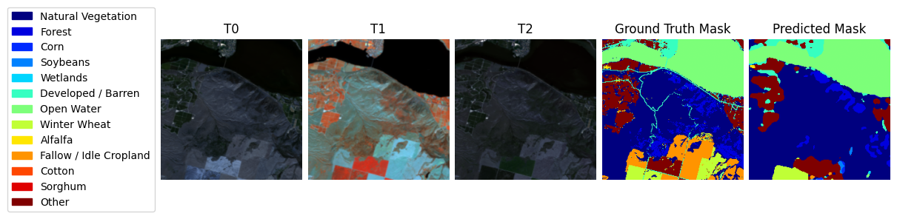

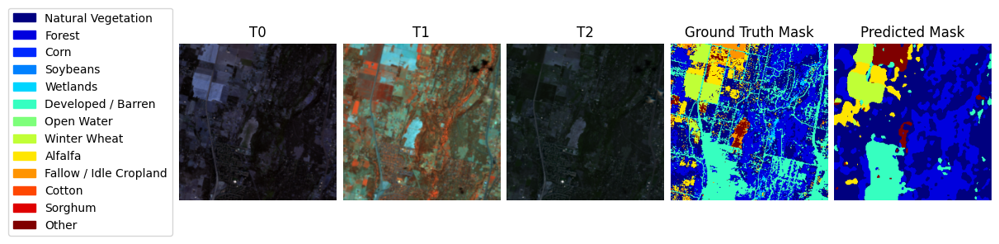
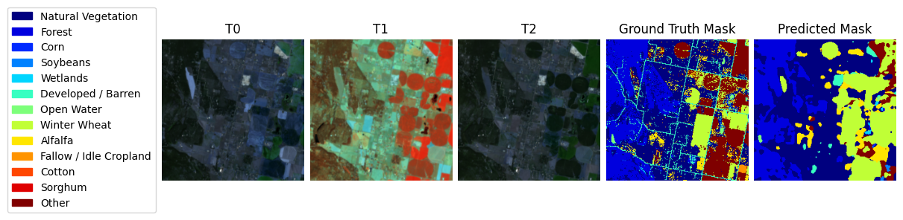
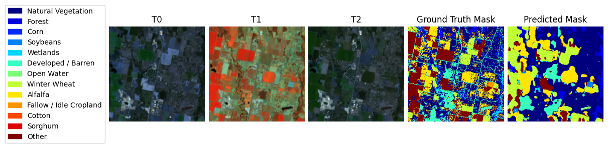
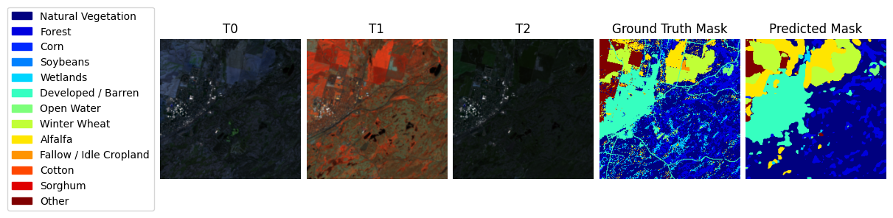
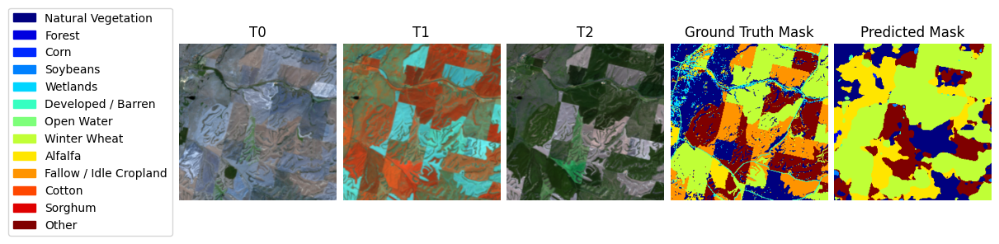
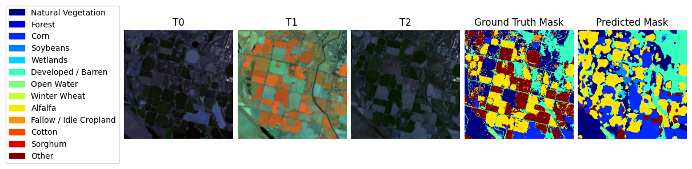
Last update:
March 31, 2025